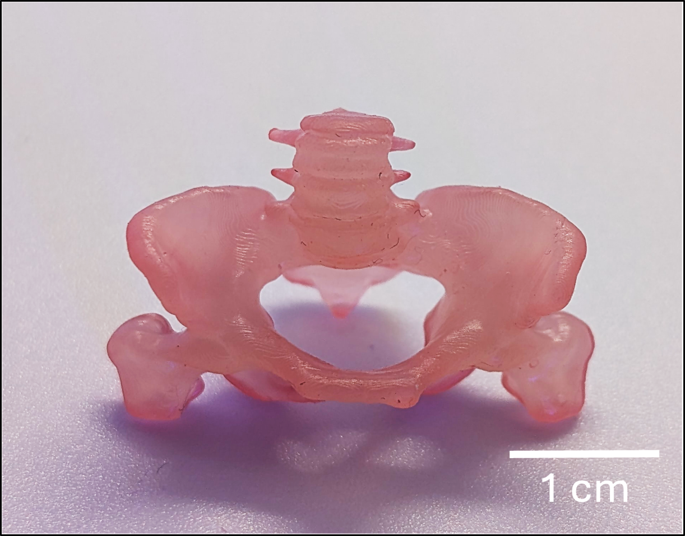
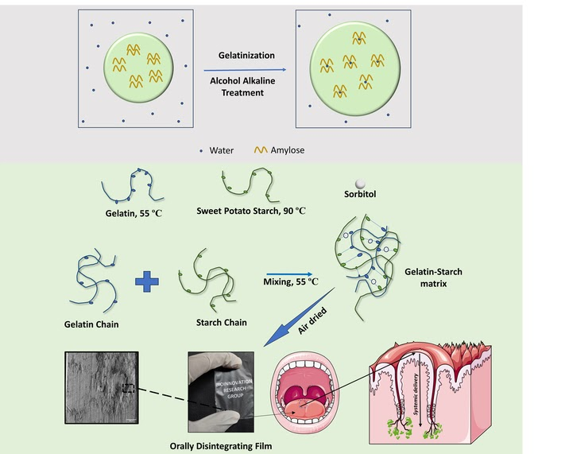
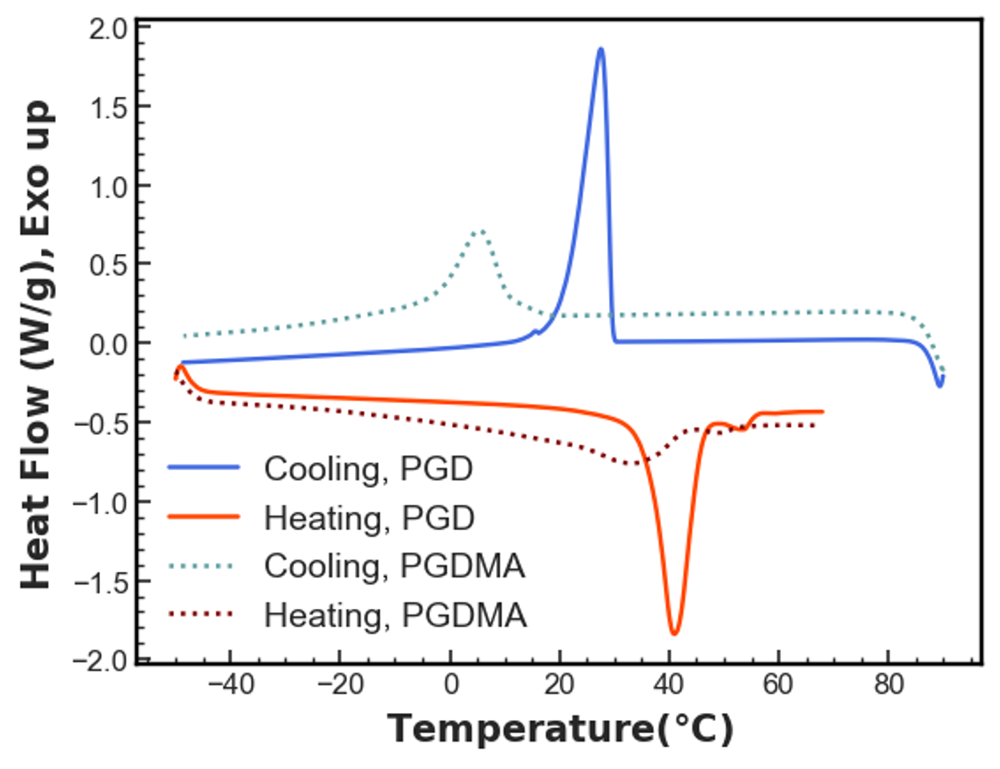
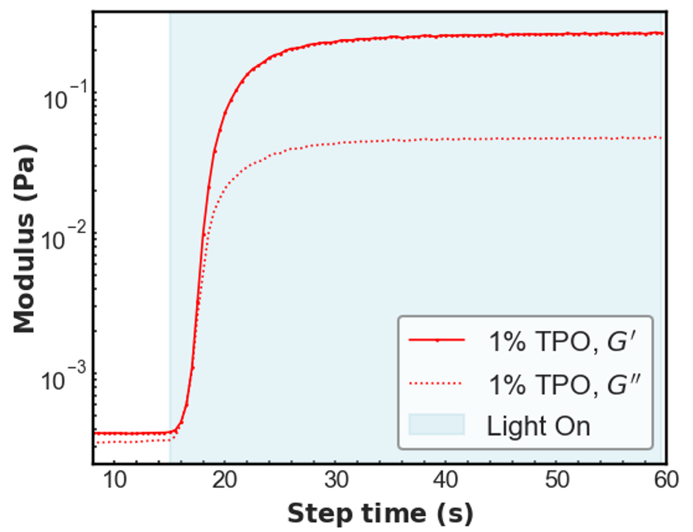
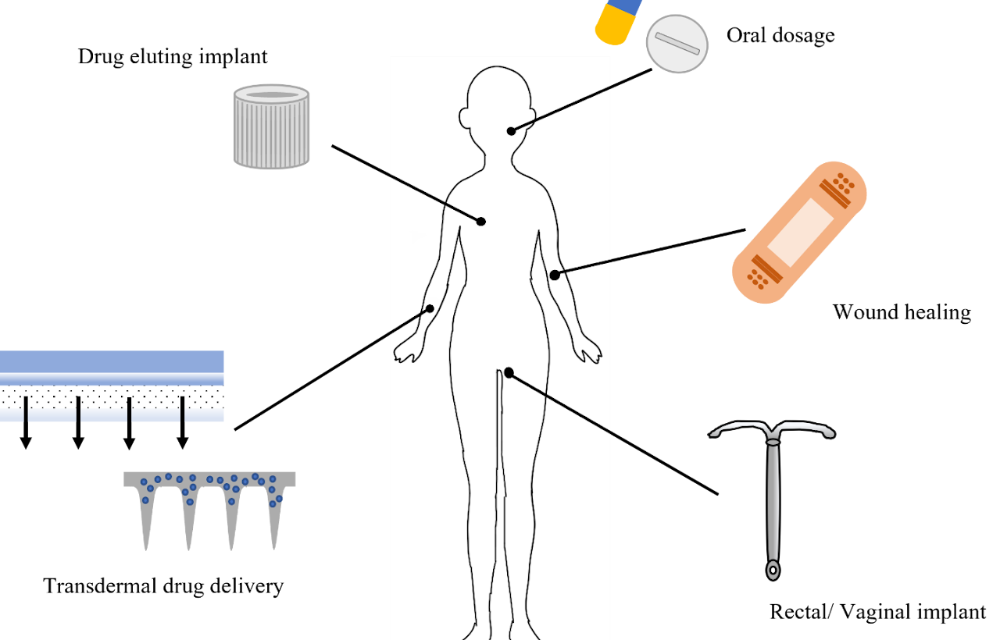
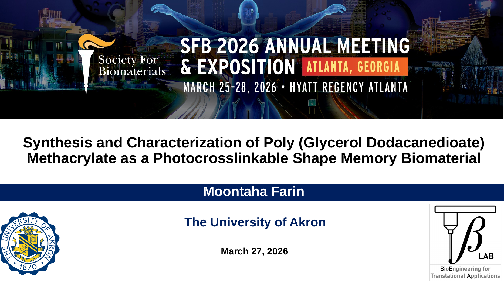
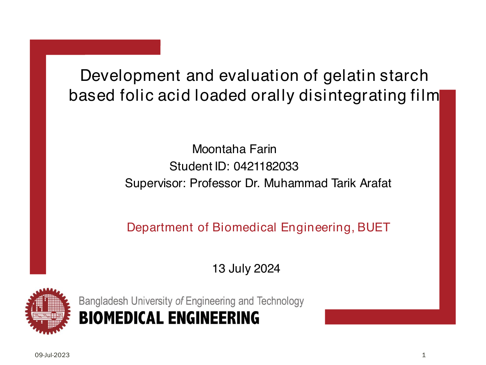

Shape-Memory Polymers
Photocrosslinkable PGD Methacrylate
Synthesis and characterization of a biocompatible, photocrosslinkable shape-memory resin for intricate patient-specific constructs.
View research evidence ↓Biomedical Engineer · Polymer & Biomaterials Researcher
My research experience spans soft polymers, polymer synthesis, biomaterials, drug delivery, DLP 3D printing, and materials characterization.
I am interested in understanding structure–property relationships in functional polymeric materials and developing advanced materials for biomedical and translational applications.
Research Interests
Selected work
.

Shape-Memory Polymers
Synthesis and characterization of a biocompatible, photocrosslinkable shape-memory resin for intricate patient-specific constructs.
View research evidence ↓
Polymeric Drug Delivery
Patient-convenient orally disintegrating films with tunable mechanical, thermal, morphological, and release properties.
View thesis presentation ↗Evidence, not just keywords
I connect chemical composition, processing behavior, thermal response, mechanical performance, and morphology to understand structure–property relationships.
NMR · FTIR · GPC
DSC
DMA · Tensile Testing
XRD · SEM
UV–Vis · Photorrheology


Polymeric systems
My earlier work connects polymer modification and formulation with patient-centered drug delivery. This foundation now complements my work in functional biomaterials and additive manufacturing.

Research output
Peer-reviewed publication, conference communication, and competitive recognition.
Moontaha Farin, et al. · Rapid Prototyping Journal
A review of additive-manufacturing technologies, materials, and design choices for personalized drug-delivery systems.

Oral Presentation · 27 March 2026
SFB 2026 Annual Meeting & Exposition, Atlanta, Georgia. Presented through the University of Akron.
View Presentation ↗
MSc Thesis Presentation · 13 July 2024
Department of Biomedical Engineering, Bangladesh University of Engineering and Technology (BUET). Supervised by Professor Dr. Muhammad Tarik Arafat.
View Presentation ↗Poster Presentation
Presented research in biomaterials and tissue-engineering applications.
Award
Competitive travel support for participation in TERMIS–AM.
Curriculum Vitae
Download my CV for a concise overview of my education, research experience, technical skills, publications, presentations, and awards.
Download CVBackground
My path from chemical engineering to biomedical engineering connects polymer chemistry, materials processing, characterization, drug delivery, and additive manufacturing.
Research on photocrosslinkable shape-memory polymers, DLP 3D printing, and chemical, thermal, mechanical, and biological characterization.
Developed starch–gelatin orally disintegrating films and investigated material properties and rapid drug-release performance.
Supported teaching and learning activities within the biomedical engineering program.
Conducted design optimization for the synthesis of activated carbon fiber from textile cotton waste.
August 2024 – August 2026
Research Project: Synthesis and Characterization of a Photocrosslinkable Shape-Memory Polymer for Biomedical Applications.
Relevant Coursework: Advanced Polymer Engineering, 3D Bioprinting, Experimental Design, and Model-Based Systems Engineering.
2021 – 2024
Thesis: Physically Modified Sweet Potato Starch/Gelatin-Based Folic Acid Orally Disintegrating Film for Rapid Drug Release.
2016 – 2021
Thesis: Design Optimization for the Synthesis of Activated Carbon Fiber from Textile Cotton Waste.
Contact